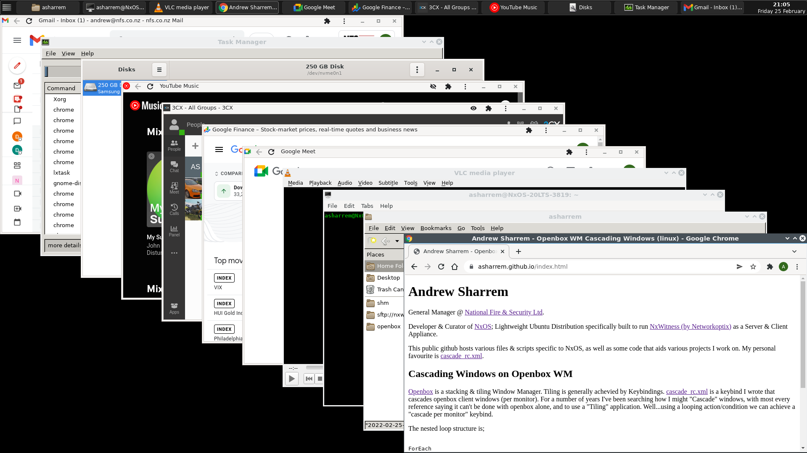

Openbox is a [floating/stacking] Window Manager. For a number of
years
I've been searching how I might "Cascade" open windows, with most every reference saying it can't be done with
Openbox alone, and to use a "Tiling" application. Tiling is achieved by Openbox Keybindings. Cascade_rc.xml is a keybind
I wrote that cascades Openbox client windows (per monitor) with no other app required. Using the built-in looping action/condition we
can achieve a "cascade per monitor" keybind.
The basic nested loop structure is a bit like a card shuffle;
ForEach
Resize Window to Top Left
Lower
ForEach
Nudge All other Windows
End ForEach
End ForEach
